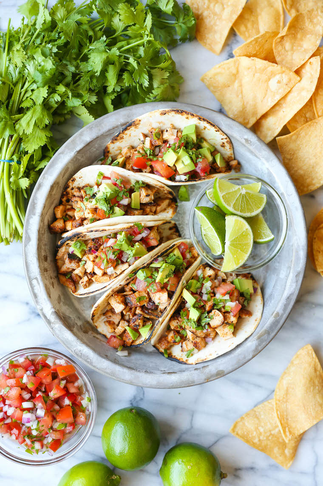

Home
Chicken Tacos

Description
Easy to make, authentical chicken tacos!
Ingredients
- 2 teaspoons chili powder
- 1 teaspoon ground cumin
- 1 teaspoon smoked paprika
- 1 teaspoon dried oregano
- 1/2 teaspoon garlic powedr
- Kosher salt and freshly grounded black pepper, to taste
- 1 1/2 pounds boneless, skinless chicken thighs
- 1 tablespoon canola oil
- 12 mini flour tortillas, warmed
- 1 cup pico de gallo, homemade or store-bought
- 1 avocado, halved, peeled, seeded and diced
- 1/2 cup chopped fresh cilantro leaves
- 1 lime, cut into wedges